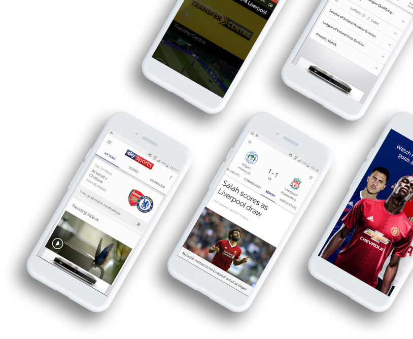

Sports
Get a personalized football experience tailored just for you
Achieve super-fan status by getting tailored updates and up-to-the-minute information on your team.

WHAT IT DOES
An Enhanced Football Experience
The Guardian Live Scores app is your go to app for live scores and watching Premier League goals… Get in there, what a result!
As well as videos of all the goals, you can watch match highlights, check out the latest scores and results and stay bang-up-to-date with the big football stories from The Guardian publication.
GET STARTED
User-friendly Interface
The in-game goal clips from every Premier League match are available to Guardian TV customers with a Guardian subscription.
So, if you’re not a subscriber, now’s the time to make that savvy call. If that’s a step too far for you, you can still watch loads of firecracker Premier League action as long as you sign in with a free Guardian iD.
Features That Will Tailor Your Experience

• Video highlights for every Premier League and English Football League game

• Notifications for your teams, including in-game goal clips and Premier League match highlights for Sky TV subscribers with Guardian.

• Brand new video section including dedicated areas for your chosen team, trending video, Premier League, Football league and other major leagues

• Match pages showing live scores, commentary, team line-ups and enhanced match stats to keep you up-to-date on all the action

• The new picture in picture video mode means you can watch goals, manager interviews and more whilst using other areas of the app – so you don’t need to miss any of the action

• Live updated league tables including all the domestic, European and major leagues and tournaments

• The Guardian News Vidiprinter. Follow the goals as they go in with our new and improved Vidiprinter

• Match reports, previews and a dedicated news section

• And you can achieve super-fan status by personalising your home page with up-to-the-minute information on your team.
What Our Users Say


I use this app every day and it's a great way to keep up to date with what's going on in football. It's a shame it won't rotate into landscape mode like its main competitor
I use this app every day and it's a great way to keep up to date with what's going on in football. It's a shame it won't rotate into landscape mode like its main competitor


Good for watching the goals and great for highlights instead of waiting till 10:30 before you can watch highlights on March of the day also no need of sky go

We have been featured in


Get Up Close With Your Team
If you’re interested in the scores of more than one team (it’s OK, we won’t tell your mates you support two clubs!), you can choose the scores and competitions that matter to you using the ‘My Scores’ section. So, make sure you’re a top-flight football fan by downloading the Football Score Centre now. It’s got all this: